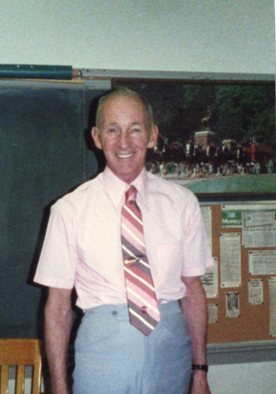
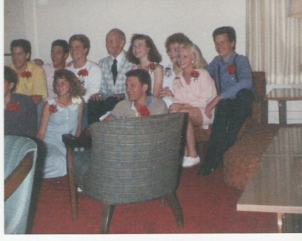
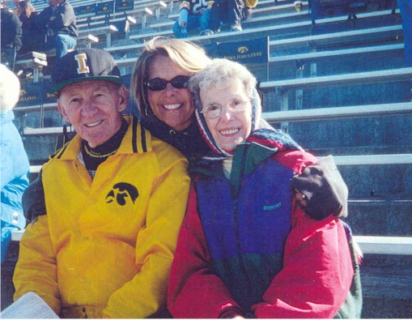
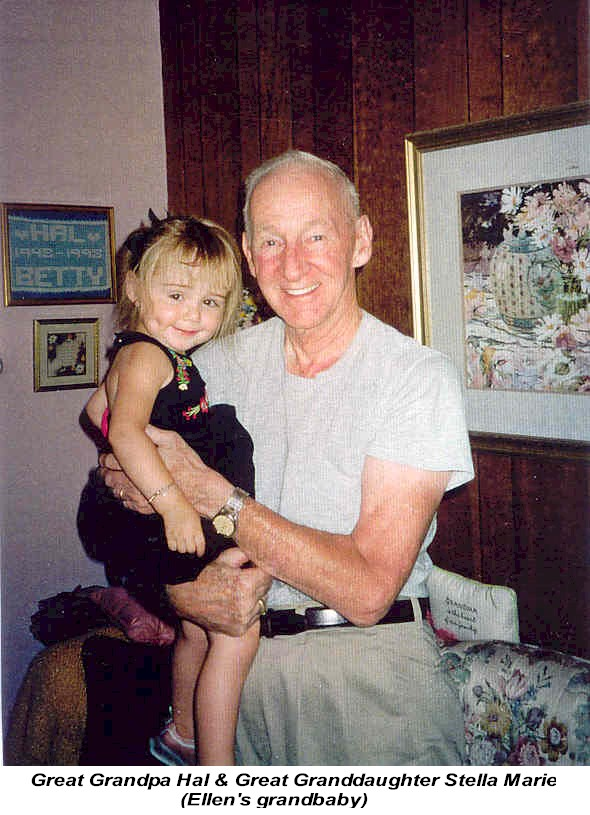

BHS 1967 Faculty Member
Mr. Hal Lyness
Mr. Hal Lyness - Interviewed July 19, 2008 by Bob Sapp Part 1 (80 minutes)
Mr. Hal Lyness - Interviewed July 19, 2008 by Bob Sapp Part 2 (1 minute)
Mr. Hal Lyness - Obituary
Mr. Hal Lyness - Boone News Republican Guest Book
Mr. Hal Lyness - Des Moine Register Article
Mr. Hal Lyness - Facebook Memories Tribute
Mr. Hal Lyness - Schroeder Memorial Guest Book

Mr. Lyness in the Classroom

Mr. Lyness with Students

Mr. Lyness, daughter Becky and wife Betty (Go HAWKS!)

Mr. Lyness & Great Granddaughter (2005)